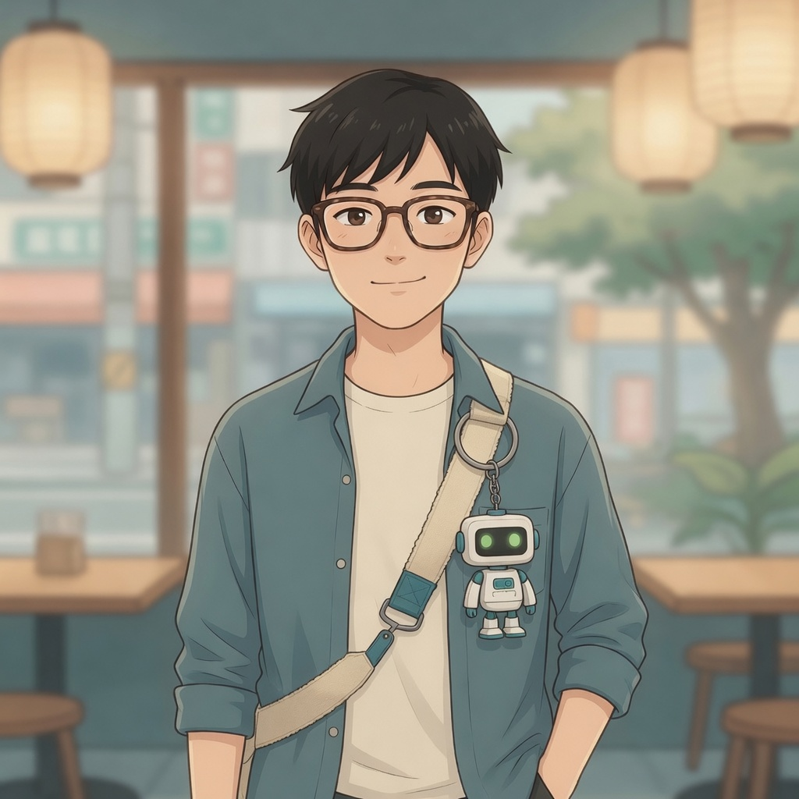

沈文Shěn Wén— the builder —
The easygoing American strangers keep addressing in quick Chinese — he reads local until he answers. He builds: robotics, AI, whatever’s broken on the table in front of him. He says the least of anyone there and is the reason there’s a table; his handmade robot, 小圖, rides on his bag strap wherever he goes.
這個可以修。Zhège kěyǐ xiū.“This can be fixed.”
Catchphrase
Neutral
Excited
Tired